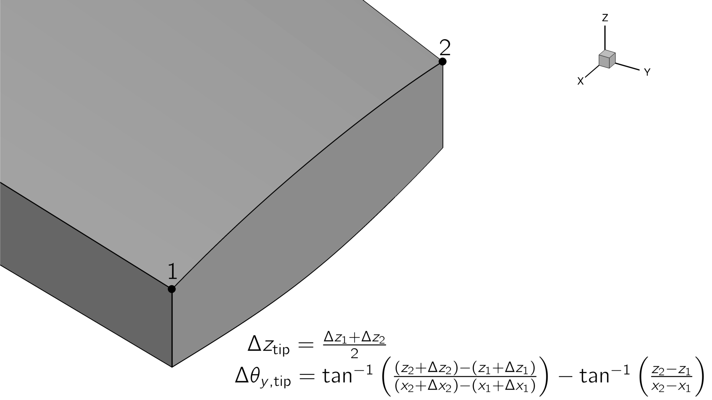
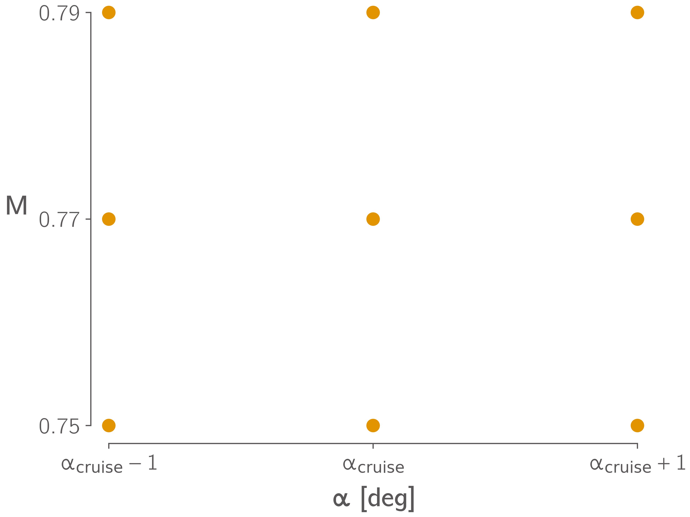

Required Results¶
Benchmark Analyses¶
In order to quantify the differences between the codes and meshes used by participants separately from differences in optimized designs, participants should provide the following results for the baseline wing. These analyses should be performed using the same meshes participants use for their optimizations. They should be performed using the baseline geometry and the following structural sizing variables on every panel:
Variable |
Value (m) |
|---|---|
Stiffener Pitch |
0.15 |
Panel Thickness |
0.0065 |
Stiffener Height |
0.05 |
Stiffener Thickness |
0.006 |
Benchmark Aerodynamic Analysis¶
Report the values of \(C_L\) and \(C_D\) for the baseline OML in the cruise condition at angles of attack from 0 to \(5^{\circ}\) in steps of at most \(1^{\circ}\).
Benchmark Structural Analysis¶
Simulate the baseline wing under a uniform pressure load of \(30kPa\) applied to the lower skin of the wingbox, include 2.5g inertial (a.k.a self-weight) loads. Report the tip deflection and twist, compliance (total strain energy), and separate factors of safety for material and buckling failure. The tip deflection and twist should be calculated using the deflections at the top corners of the tip rib, as shown in Fig. 7.

Fig. 7 Method for calculating wing tip deflections.¶
Benchmark Aeroelastic Analysis¶
Perform aeroelastic analyss of the baseline wing in the cruise condition at an angle of attack of \(3.25^{\circ}\), include 1g inertial (a.k.a self-weight) loads. Report \(C_L\), \(C_D\), and the same values reported for the benchmark structural analysis.
Optimization Results¶
Participants are free to start their optimizations from any initial design they choose, a sensible progression would be:
Generate a reasonable structural sizing by performing a structural optimization under fixed loads.
Start the Case 1 optimization from this design.
Use the optimized design from Case 1 as the starting point for Case 2.
Use the optimized design from Case 2 as the starting point for Case 3.
However, participants should ensure that the reference values used in the geometric constraints (e.g leading edge radii, spar heights etc) are from the baseline geometry.
Participants should provide the following results at a minimum:
Case 1¶
Wall clock time and total number of CPU hours required for each optimization and a brief description of the hardware used.
Convergence plots showing the objective value along with measures of constraint violation and optimality vs iterations, function evaluations, or wall time. The criteria used to terminate the optimization should also be described. Most gradient-based optimizers report some norm of the gradient of the Lagrangian as an Optimality value which is used to judge satisfaction of the KKT conditions [MN22] (Section 5.3). If your optimizer does not provide such a value then you should describe the stopping criteria of your optimization.
Spanwise lift distribution plots for the initial and optimized designs in all flight conditions.
Plots of the spanwise structural sizing distributions in the upper and lower skins, and the leading and trailing edge spars. Participants should plot the equivalent axial thickness, which is the thickness of an unstiffened panel with the same axial stiffness as the stiffened panel. This can be computed as \(t_\text{eq} = t_\text{panel}+A_\text{stiff}/P_\text{stiff}\), where \(t_\text{panel}\) is the panel thickness, \(A_\text{stiff}\) is the stiffener cross-sectional area, and \(P_\text{stiff}\) is the stiffener pitch.
- Quantities of interest for the optimized design:
Wingbox structural mass
Wing total mass
Aircraft landing gross mass
Angle of attack in each maneuver condition
Case 2¶
As for Case 1 plus:
Plots of in-flight twist distributions for each flight condition for the initial and optimized designs.
Airfoil shapes and cruise Cp distributions of initial and optimized designs at 10, 30, 50, 70 and 90% semispan locations.
- Additional quantities of interest for the optimized design:
Cruise angle of attack
Cruise lift-to-drag ratio (including airframe drag)
Total fuel burn
Take-off gross mass
Fuel tank usage \(\left(\frac{M_\text{fuel}/\rho_\text{fuel} - V_\text{aux}}{2k_\text{tank} V_\text{wingbox}}\right)\)
Lift to drag ratio for the optimized wing for a range of \(\pm 1^{\circ}\) angle of attack and \(\pm 0.02\) Mach number relative to the cruise condition. Participants should simulate at least the 9 points shown in Fig. 8, but may choose to simulate more points within the range if desired.

Fig. 8 Minimum required stencil for the post-optimality study.¶
Case 3¶
As for Case 2 plus:
Additional quantities of interest for the optimized design:
Wing semispan
Wing aspect ratio
Wing taper ratio
Wing leading edge sweep angle
Wing area
Wing loading
Bibliography¶
Joaquim R. R. A. Martins and Andrew Ning. Engineering Design Optimization. Cambridge University Press, Cambridge, UK, January 2022. ISBN 9781108833417. URL: https://mdobook.github.io, doi:10.1017/9781108980647.